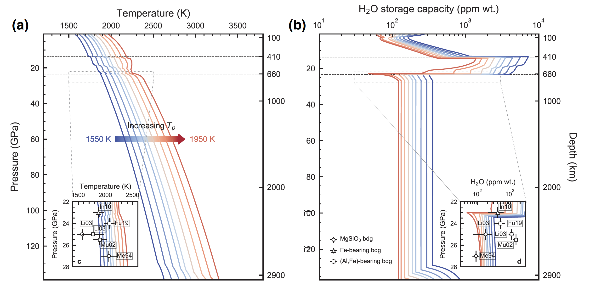
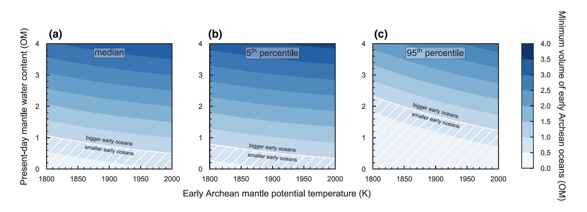

|
ABSTRACT
The water content in Earth's mantle today remains poorly constrained, but the bulk water storage capacity in the solid mantle can be quantified based on experimental data and may amount to a few times the modern surface ocean mass (OM). An appreciation of the mantle water storage capacity is indispensable to our understanding of how water may have cycled between the surface and mantle reservoirs and changed the volume of the oceans through time. In this study, we parameterized high pressure‐temperature experimental data on water storage capacities in major rock‐forming minerals to track the bulk water storage capacity in Earth's solid mantle as a function of temperature. We find that the mantle water storage capacity decreases as mantle potential temperature (Tp) increases, and its estimated value depends on the water storage capacity of bridgmanite in the lower mantle: 1.86–4.41 OM with a median of 2.29 OM for today (Tp = 1600 K), and 0.52–1.69 OM with a median of 0.72 OM for the early Earth's solid mantle (for a Tp that was 300 K higher). An increase in Tp by 200–300 K results in a decrease in the mantle water storage capacity by 1.19(+0.9,−0.16)–1.56(+1.1,−0.22) OM. We explored how the volume of early oceans may have controlled sea level during the early Archean (4–3.2 Ga) with some additional assumptions about early continents. We found that more voluminous surface oceans might have existed if the actual mantle water content today is > 0.3–0.8 OM and the early Archean Tp was ≥1900 K.


|